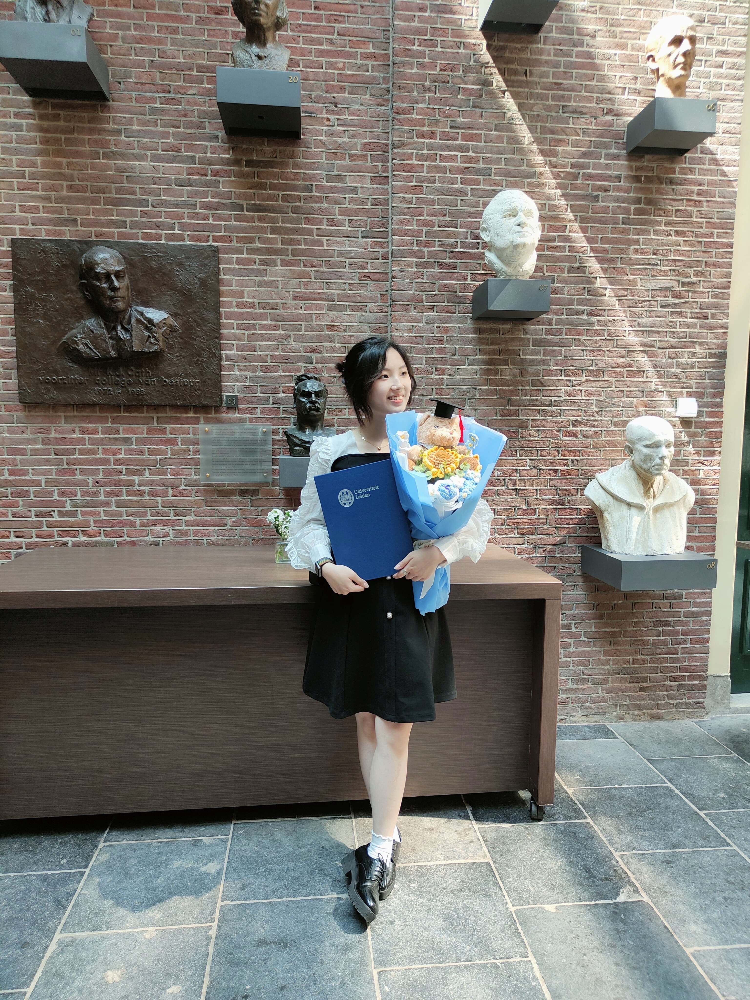

Hi, nice to meet you!
My name is Chiini and I’m a UX designer with a strong interest in cultural UX and visual communication. I’m driven by curiosity about how people from different backgrounds think, behave, and interact with digital products. Understanding context, cultural nuance, and human behavior is at the core of how I approach design.
I enjoy translating research insights into clear structures, visual systems, and strong concepts. Sketching and rapid concept exploration are an essential part of my process, allowing me to iterate quickly and make ideas tangible early on. My strength lies in synthesizing complexity and visualizing it in a way that supports intuitive and inclusive user experiences.
Across my projects, I’ve worked through the full UX process – from stakeholder alignment and research to ideation, prototyping, and system thinking. I’m especially motivated by projects that involve community, culture, and human connection.
I’m currently looking for opportunities to grow as a UX designer in a collaborative environment where research, strategy, and design come together to create meaningful impact.
When I’m not designing, you’ll find me teaching aerial hoop and flexibility. Working as an instructor has taught me discipline, structure, and how small refinements can transform performance – principles that strongly influence how I approach design.
Download CV